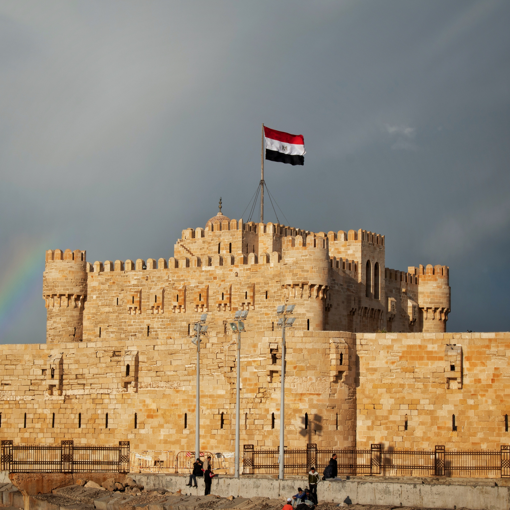
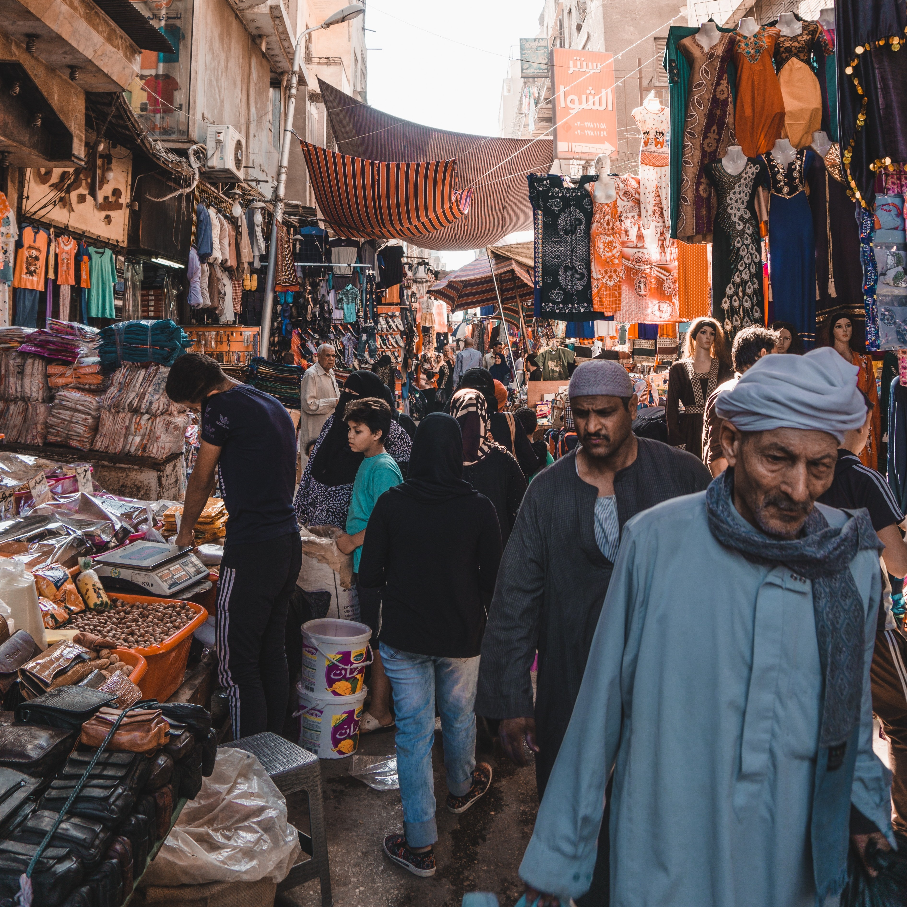

.jpg)
Egypt
From Ancient Pyramids to Vibrant Bazaars
My Egyptian odyssey commenced in Cairo, the bustling capital, and a living testament to the coexistence of ancient and modern. The awe-inspiring Giza Plateau, home to the Great Pyramids and the Sphinx, awaited me with open arms. Standing before these colossal structures, I marveled at the ingenuity of the ancient Egyptians. In Cairo, I ventured into the vibrant Khan El Khalili bazaar, a sensory overload of colors and sounds. I immersed myself in the art of haggling, sipping mint tea with shopkeepers and discovering hidden treasures amidst the labyrinthine alleys.
 Next, I embarked on a journey to Luxor, once known as Thebes, the heart of ancient Egypt's pharaonic civilization. The grandeur of the Karnak Temple Complex, with its towering columns and intricate hieroglyphics, transported me back in time. Exploring the Valley of the Kings, I descended into the tombs of pharaohs, adorned with vivid murals depicting their journey to the afterlife. In Luxor, I couldn't resist the allure of a hot air balloon ride at dawn. Floating above the Valley of the Kings, the golden rays of the rising sun illuminated the ancient landscape, offering an unparalleled view of the Nile River and the temples below.
Continuing my journey southward, I reached Aswan, a serene city by the Nile. The Nubian villages on the river's edge welcomed me with their vibrant colors and warm hospitality. A visit to the Nubian House allowed me to immerse myself in their rich traditions, savoring traditional dishes and vibrant music. In Aswan, I embarked on a felucca sailboat journey along the Nile, guided by local captains. Drifting under billowing white sails, I absorbed the tranquil beauty of the river, with felucca riders sharing tales of their lives by the Nile.
My journey continued to Abu Simbel, a remote site graced by the colossal temples of Ramses II and Nefertari. The sheer scale of these temples, hewn into the rock face, was staggering. Witnessing the sunlight penetrate the inner sanctums during the biannual solar alignment was a humbling experience, a testament to the precision of ancient Egyptian engineering. In Abu Simbel, I joined a guided archaeological tour, delving into the secrets of the temples and the lives of the pharaohs. It was a deep dive into Egypt's rich historical tapestry.
 Turning northward, I arrived in Alexandria, a coastal gem steeped in history. The Bibliotheca Alexandrina, a modern tribute to the ancient Library of Alexandria, held a wealth of knowledge and cultural treasures. The city's Mediterranean charm was palpable as I strolled along the Corniche, watching the sea's gentle embrace. In Alexandria, I attended a performance of traditional Egyptian music and dance. The hypnotic rhythms and graceful movements of the performers celebrated the country's artistic heritage.
Egypt's allure extended beneath the surface as I explored the vibrant underwater world of the Red Sea. In Sharm El Sheikh, I embarked on scuba diving adventures, encountering colorful coral reefs and a dazzling array of marine life. Swimming alongside graceful sea turtles and gliding over pristine coral gardens was a surreal experience, a testament to Egypt's natural beauty both on land and beneath the waves.
As I reflect on my Egyptian odyssey, I'm reminded that Egypt is a living museum of human history, where ancient wonders stand as a testament to the brilliance of our ancestors. From the mighty pyramids to the tranquil banks of the Nile, each place I visited revealed a unique facet of Egypt's enduring charm.
Join me in my future travels as I continue to explore the rich tapestry of cultures and landscapes across Africa and beyond. Until next time, keep your wanderlust alive and your heart open to the wonders of the world.